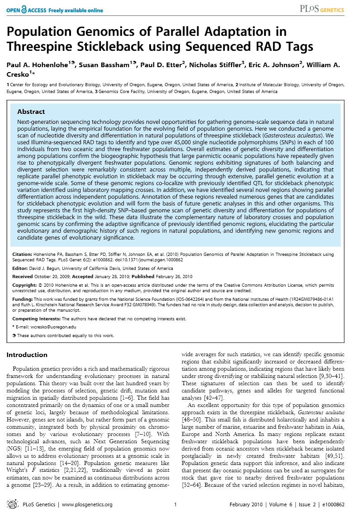
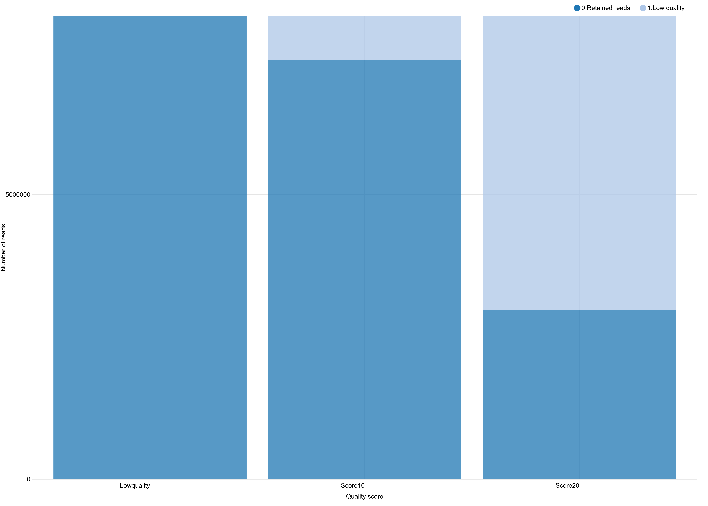
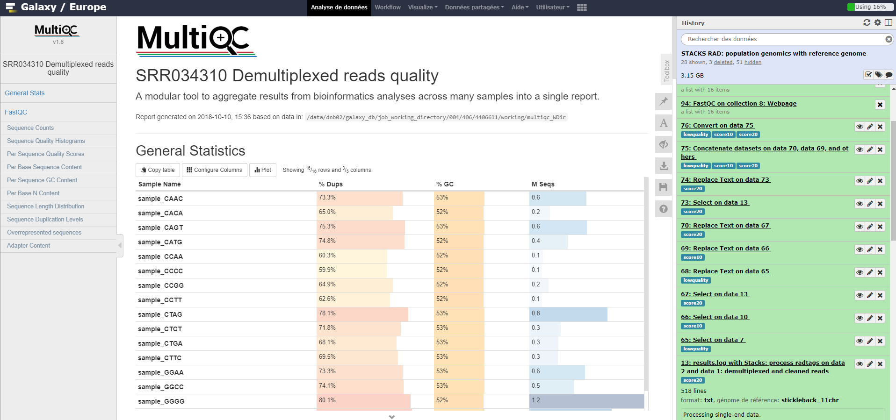
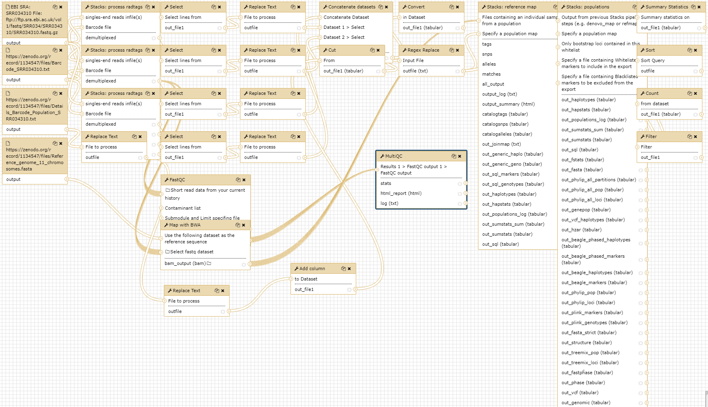

RAD-Seq Reference-based data analysis
 Yvan Le Bras
Yvan Le Bras
Overview
question Questionsobjectives Objectives
How to analyze RAD sequencing data using a reference genome for a population genomics study?
requirements Requirements
Analysis of RAD sequencing data using a reference genome
SNP calling from RAD sequencing data
Calculate population genomics statistics from RAD sequencing data
time Time estimation: 8 hours
Supporting Materials
last_modification Last modification: Jan 6, 2021
Introduction
In the study of Hohenlohe et al. 2010, a genome scan of nucleotide diversity and differentiation in natural populations of threespine stickleback Gasterosteus aculeatus was conducted. Authors used Illumina-sequenced RAD tags to identify and type over 45,000 single nucleotide polymorphisms (SNPs) in each of 100 individuals from two oceanic and three freshwater populations.

We here proposed to re-analyze these data at least until the population genomics statistics calculation step using STACKS pipeline. Gasterosteus aculeatus draft genome will be used here as reference genome. In a reference-based RAD-seq data analysis, the reads are aligned (or mapped) against a reference genome to constrain our analysis to focus on already discovered loci. A de-novo approach can also be conducted (see de_novo tutorial, enhancing discoverability of new loci of interest but also of false positive one).
Agenda
In this tutorial, we will deal with:
Pretreatments
Data upload
The original data is available at NCBI SRA ENA under accession number SRR034310 as part of the NCBI SRA ENA study accession number SRP001747.
We will look at the first run SRR034310 out of seven which includes 16 samples from 2 populations, 8 from Bear Paw (freshwater) and 8 from Rabbit Slough (oceanic). We will download the reads directly from SRA and the remaining data (i.e reference genome, population map file, and barcodes file) from Zenodo.
hands_on Hands-on: Data upload
- Create a new history for this RAD-seq exercise. If you are not inspired, you can name it “STACKS RAD: population genomics with reference genome” for example…
tip Tip: Creating a new history
Click the new-history icon at the top of the history panel
If the new-history is missing:
- Click on the galaxy-gear icon (History options) on the top of the history panel
- Select the option Create New from the menu
- EBI SRA tool import files from SRA:
- Search for
SRR034310- Under results for Run, click on view all 1 result
- In the next menu, click on the result
SRR034310- In the table at the bottom, click the link in the column FASTQ files (Galaxy)
This will redirect to the Galaxy website and start the download.
- Upload remaining training data from Zenodo:
https://zenodo.org/record/1134547/files/Barcode_SRR034310.txt https://zenodo.org/record/1134547/files/Details_Barcode_Population_SRR034310.txt https://zenodo.org/record/1134547/files/Reference_genome_11_chromosomes.fastatip Tip: Importing data via links
- Copy the link location
Open the Galaxy Upload Manager (galaxy-upload on the top-right of the tool panel)
- Select Paste/Fetch Data
Paste the link into the text field
Press Start
- Close the window
By default, Galaxy uses the URL as the name, so rename the files with a more useful name.
Make sure the fastq.gz files you imported are of datatype
fastqsanger.gztip Tip: Changing the datatype
- Click on the galaxy-pencil pencil icon for the dataset to edit its attributes
- In the central panel, click on the galaxy-chart-select-data Datatypes tab on the top
- Select
fastqsanger.gz- Click the Change datatype button
Next, we need to tell Galaxy about the reference genome associated with this.
We will define a custom reference build** for this tutorial:
tip Tip: Adding a custom Database/Build (dbkey)
- In the top menu bar, go to the User, and select Custom Builds
- Choose a name for your reference build
Stickleback- Choose a dbkey for your reference build
stickleback- Under Definition, select the option
FASTA-file from history- Under FASTA-file, select your fasta file
Reference_genome_11_chromosomes.fasta- Click the Save button
Next, we set the
dbkeyof our imported fastq files to our custom build keytip Tip: Changing Database/Build (dbkey)
- Click on the galaxy-pencil pencil icon for the dataset to edit its attributes
- In the central panel, change the Database/Build field
- Select your desired database key from the dropdown list:
stickleback- Click the Save button
- Rename datasets according to the sample names
The sequences are raw sequences from the sequencing machine, without any pretreatments. They need to be demultiplexed. To do so, we can use the Process Radtags tool from STACKS.
Demultiplexing reads
For demultiplexing, we use the Process Radtags tool from STACKS.
hands_on Hands-on: Demultiplexing reads
- Process Radtags tool with the following parameters:
- “Single-end or paired-end reads files”:
Single-end files
- “Singles-end reads infile(s)”:
SRR034310.fastq(.gz)- “Barcode file”:
Barcodes_SRR034310.tabular- “Number of enzymes”:
One- “Enzyme”:
sbfI- “Capture discarded reads to a file”:
Yes- “Output format”:
fastqquestion Questions
- How many reads where on the original dataset?
- How many are kept?
- Can you try to explain the reason why we loose a lot of reads here?
- What kind of information does this result give concerning the upcoming data analysis and the barcodes design in general?
solution Solution
The informations can be found in the results log file:
- 8895289 total reads
- 8139531 retained reads
- There are no sequences filtered because of low quality. This is because radtags didn’t apply quality related filtering since the corresponding advanced option (Discard reads with low quality scores) has not been enabled. So here, all not retained sequences are removed because of an ambiguous barcode (626265) or an ambiguous RAD-Tag (129493). This means that some barcodes are not exactly what was specified on the barcode file and that sometimes, no SbfI restriction enzyme site was found. This can be due to some sequencing problems but here, this is also due to the addition, in the original sequencing library, of RAD-seq samples from another study. This strategy is often used to avoid having too much sequences beginning with the exact same nucleotide sequence which may cause Illumina related issues during sequencing and cluster analysis
- Sequencing quality is essential! Each time your sequencing quality decreases, you loose data and thus essential biological information!
In addition to the overall statistics the numbers of retained and removed reads are also given for each barcode sequence.
- Process Radtags tool: Re-Run playing with parameters
- Section Advanced
- “Discard reads with low quality scores”:
Yes- “score limit”:
20(for example; play with this)- “Set the size of the sliding window as a fraction of the read length, between 0 and 1”:
0.30(for example; play with this)This sliding window parameter allows notably the user to deal with the declining quality at the 3’ end of reads.
hands_on Hands-on
You can use the
Chartsfunctionality through the Visualize button reachable on theRadtags logsfile you just generated.If like me you don’t have payed attention to the organization of you file for the graphical representation you obtain a non optimal bars diagram with a not intelligent X-axis ordering. There is a lot of different manner to fix this. You can use a copy/paste “bidouille” or you can use Galaxy tools to manipulate the
radtags logsfile to generate a better graph. For example, you can useSelect lines that match an expressiontool to select rows then use theConcatenate datasets tail-to-headtool to reorganize these lines in a new file. Then we generate a graphical display of the changes:First we cut the interesting lines of each
result.log with Stacks: process radtags
- Select lines that match an expression applying
^R1.fq.gzon the log files and then- Replace Text in entire line on the resulting data sets finding
R1.fq.gzand replacing withNoScoreLimitorScore10orScore20depending of the case- Select lines that match an expression applying
File\tRetained Readson one of the log file to obtain you futur header- Replace Text in entire line on the resulting data set finding
Fileand replacing with#to have a best display- Concatenate datasets tail-to-head on the resulting data sets stating from the header you just created
- Finally Convert delimiters to TAB on the resulting data set converting all Tabs to be sure having a well formatted tabular file at the end
Alternatively just copy/paste these lines on the Galaxy upload tool using Paste/fetch data section and modifying the File header by sample and filename by Score 10 / Score 20 and Lowquality for example… Before Starting the upload, you can select the
Convert spaces to tabsoption through theUpload configurationwheel. If you did not pay attention to the order you can just sort the file using the first column.
And you obtain a file like this one, ready to generate a beautiful and smart bar stacked!
# Retained Reads Low Quality Ambiguous Barcodes Ambiguous RAD-Tag Total
NoScoreLimit 8139531 0 626265 129493 8895289
Score10 7373160 766371 626265 129493 8895289
Score20 2980543 5158988 626265 129493 8895289
You can use the Charts functionality through the Visualize button to plot the data.

You can further test using a filter like clean data, remove any read with an uncalled base and see that here, this has only little impact on the number of retained reads.
The demultiplexed sequences are raw sequences from the sequencing machine, without any pretreatments. They need to be controlled for their quality.
We propose to continue the tutorial using the dataset collection containing the demultiplexed reads obtained with Process Radtag execution made with a quality score of 10 and with the Discard reads with low quality scores parameter set to Yes (so containing 7373160 retained reads).
Quality control
For quality control, we use similar tools as described in NGS-QC tutorial: FastQC.
hands_on Hands-on: Quality control
- FastQC tool to check the quality of the reads:
- param-collection “Short read data from your current history”: the fastq files (collection)
question Questions
- What is the read length?
solution Solution
The read length is 32 bp
- MultiQC tool with the following parameters:
- “Which tool was used generate logs?”:
FastQC- “Type of FastQC output?”:
raw data- param-collection “FASTQC output”: the
raw dataoutput of FastQC (collection)

Note the quality drop at bases 5-10 which are the cut site of the RADSeq protocol (TGCAGG). This is caused by the extremely uneven distribution the sequencer observes TGCAGG in lockstep on all spots/clusters, i.e. all clusters light up at the same time. Therefore the sequencer can not be sure that each spot/cluster is correct which is expressed by the lower quality score. Usually, to reduce this problem, PhiX is added, OR, as it is the case here, samples with heterogeneous barcodes lengths are mixed. Still, approximately ~99% of the cases match nucleotide expected for the cut site sequence.
As there is a draft genome for Gasterosteus aculeatus, we can use this information and map the sequences on this genome to identify polymorphism.
Mapping
To make sense of the reads, their positions within Gasterosteus aculeatus genome must be determined. This process is known as aligning or ‘mapping’ the reads to the reference genome.
comment Comment
Do you want to learn more about the principles behind mapping? Follow our training
Here we will use BWA. BWA is a fast light-weighted tool that aligns relatively short sequences (queries) to a sequence database (large), such as the human reference genome. It is developed by Heng Li at the Sanger Institute.
Li et Durbin, Bioinformatics, 2009
hands_on Hands-on: Map with BWA
- Map with BWA - map short reads (< 100 bp) against reference genome tool with the following parameters:
- “Will you select a reference genome from your history or use a built-in index?”:
Use a genome from history and build index- “Use the following dataset as the reference sequence”:
Reference_genome_11_chromosomes.fasta- “Select input type”:
Single Fastq- “Select fastq dataset”: One dataset collection containing the demultiplexed reads obtained with Process Radtag execution made with a quality score of 10 and with the
Discard reads with low quality scoresparameter set to Yes (so containing 7373160 retained reads).
BWA generates BAM files with the mapped reads.
We next want to run Stacks on the freshwater and oceanic populations.
SNP calling from radtags
Run Stacks: Reference map Galaxy tool. This program will run pstacks, cstacks, and sstacks using a perl scrip (ref_map.pl) on the members of the population, accounting for the alignments of each read.
comment Comment
Information on ref_map.pl and its parameters can be found online: https://creskolab.uoregon.edu/stacks/comp/ref_map.php.
hands_on Hands-on: Stacks: Reference map
Create a new file with our population map and name it
Population_map.txt:sample_CCCC 1 sample_CCAA 1 sample_CCTT 1 sample_CCGG 1 sample_CACA 1 sample_CAAC 1 sample_CATG 1 sample_CAGT 1 sample_CTCT 2 sample_CTAG 2 sample_CTTC 2 sample_CTGA 2 sample_GGGG 2 sample_GGAA 2 sample_GGTT 2 sample_GGCC 2tip Tip: Creating a new file
- Open the Galaxy Upload Manager
- Select Paste/Fetch Data
Paste the file contents into the text field
- Press Start and Close the window
Stacks: Reference map tool:
- “Select your usage”:
Population- “Files containing an individual sample from a population”: Choose the mapped reads (data collection)
- “pecify a population map”:
Population_map.txtcreated above- “Minimum depth of coverage”:
3comment Comment
If you are using a file presenting population information and individual name in a different manner than expected by STACKS, you can use Galaxy tools like
Replace Text(for example to replaceRabbit Sloughby a population number like2,Add column(for example to addsample_) orCut columns from a table(to put the newsample_column af the first place) and finallyRegex replace(replacing(sample_)\tby\1) to generate it…Once Stacks has completed running, investigate the output files:
ref_map.log,Summary from Stacks: reference map on data...andCatalog (*)(snps, alleles and tags). Notice that each locus now has a chromosome/base pair specified in each of the*tags.tsvfiles and in the catalog files.
Calculate population genomics statistics
hands_on Hands-on: Calculate population genomics statistics
- Stacks: populations tool with the following parameters:
- “Input type”:
Stacks output- “Output from previous Stacks pipeline steps (e.g. denovo_map or refmap)”: Full output from ref_map
- “Specify a population map”:
Population_map.txt- Section Data filtering options
- “Minimum percentage of individuals in a population required to process a locus for that population”:
0.75- Section Output options (VCF and Structure) and enabling SNP and haplotype-based F statistics calculation.
- “Output results in Variant Call Format (VCF)”:
Yes- “Output results in Structure Format”:
Yes- “Enable SNP and haplotype-based F statistics”:
Yes- Now look at the output in the file
batch_1.sumstatsnamedSNP and Haplotype-based F statistics with Stacks: populations ...on your history. This file is also reachable on the data collection nammedFull output from ref_map .....with his original namebatch_1.sumstats. There are a large number of statistics calculated at each SNP, so use Galaxy tools like filter, cut, and sort to focus on some.question Question
- What is the maximum value of FST’ at any SNP? Don’t hesitate to look at the STACKS manual to find where this parameter is
- What is the meaning of this FST’ value compared a a classical FST one? Once again, the STACKS manual can help you ;)
- How many SNPs reach this FST’ value?
solution Solution
- 1
- FST’ is a haplotype measure of FST that is scaled to the theoretical maximum FST value at this locus. Depending on how many haplotypes there are, it may not be possible to reach an FST of 1, so this method will scale the value to 1
- 78
You can now for example filter this dataset to only keep FST’=1 loci for further analysis…
Conclusion
In this tutorial, we have analyzed real RAD sequencing data to extract useful information, such as which loci are candidate regarding the genetic differentiation between freshwater and oceanic Stickelback populations. To answer these questions, we analyzed RAD sequence datasets using a reference-based RAD-seq data analysis approach. This approach can be sum up with the following scheme:

Useful literature
Further information, including links to documentation and original publications, regarding the tools, analysis techniques and the interpretation of results described in this tutorial can be found here.
Feedback
Did you use this material as an instructor? Feel free to give us feedback on how it went.

Citing this Tutorial
- Yvan Le Bras, 2021 RAD-Seq Reference-based data analysis (Galaxy Training Materials). /training-material/topics/ecology/tutorials/ref-based-rad-seq/tutorial.html Online; accessed TODAY
- Batut et al., 2018 Community-Driven Data Analysis Training for Biology Cell Systems 10.1016/j.cels.2018.05.012
details BibTeX
@misc{ecology-ref-based-rad-seq, author = "Yvan Le Bras", title = "RAD-Seq Reference-based data analysis (Galaxy Training Materials)", year = "2021", month = "01", day = "06" url = "\url{/training-material/topics/ecology/tutorials/ref-based-rad-seq/tutorial.html}", note = "[Online; accessed TODAY]" } @article{Batut_2018, doi = {10.1016/j.cels.2018.05.012}, url = {https://doi.org/10.1016%2Fj.cels.2018.05.012}, year = 2018, month = {jun}, publisher = {Elsevier {BV}}, volume = {6}, number = {6}, pages = {752--758.e1}, author = {B{\'{e}}r{\'{e}}nice Batut and Saskia Hiltemann and Andrea Bagnacani and Dannon Baker and Vivek Bhardwaj and Clemens Blank and Anthony Bretaudeau and Loraine Brillet-Gu{\'{e}}guen and Martin {\v{C}}ech and John Chilton and Dave Clements and Olivia Doppelt-Azeroual and Anika Erxleben and Mallory Ann Freeberg and Simon Gladman and Youri Hoogstrate and Hans-Rudolf Hotz and Torsten Houwaart and Pratik Jagtap and Delphine Larivi{\`{e}}re and Gildas Le Corguill{\'{e}} and Thomas Manke and Fabien Mareuil and Fidel Ram{\'{\i}}rez and Devon Ryan and Florian Christoph Sigloch and Nicola Soranzo and Joachim Wolff and Pavankumar Videm and Markus Wolfien and Aisanjiang Wubuli and Dilmurat Yusuf and James Taylor and Rolf Backofen and Anton Nekrutenko and Björn Grüning}, title = {Community-Driven Data Analysis Training for Biology}, journal = {Cell Systems} }